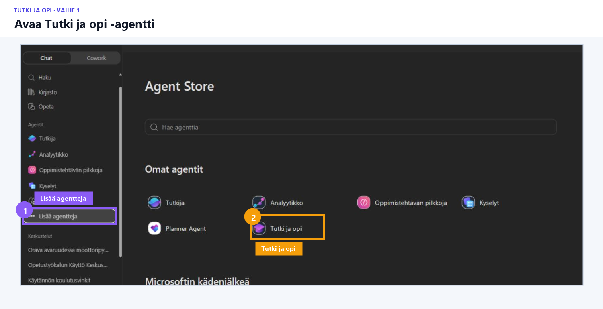
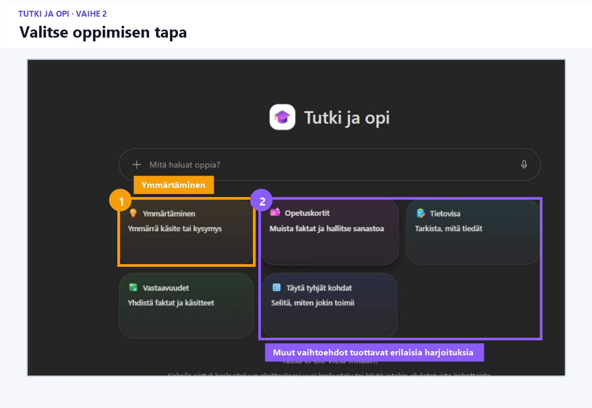
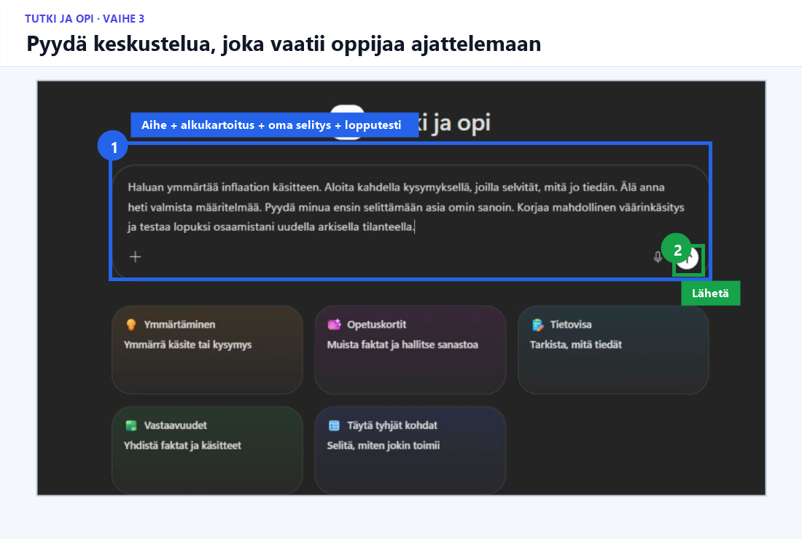
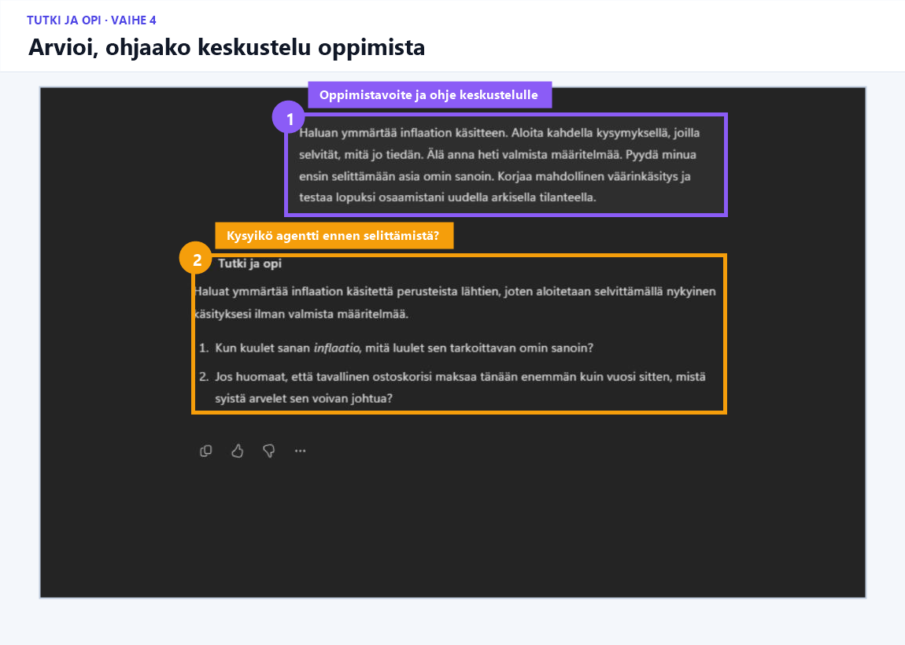

Harjoitus 3 · Ohjattu demo tai pareittain · 7–9 min
Ohjaako Tutki ja opi oikeasti oppimista?
Tavoite
Opit tunnistamaan, millainen pyyntö saa Copilotin kysymään, aktivoimaan aikaisempaa tietoa ja testaamaan ymmärtämistä valmiin vastauksen antamisen sijasta.
Teet harjoituksen oppijan roolissa — näet saman, minkä oppilaasi näkisi.
VAIHE 1/5
Avaa agentti
Valitse vasemmasta valikosta Lisää agentteja ja avaa Tutki ja opi.
Älä käytä aikaa agentin etsimiseen kesken harjoituksen.

VAIHE 2/5
Valitse oppimisen tapa
Valitse Ymmärtäminen.
Muut vaihtoehdot, kuten Opetuskortit ja Tietovisa, tuottavat erilaisia oppimisaktiviteetteja. Tässä harjoituksessa tarkastellaan keskustelevaa oppimista.

VAIHE 3/5
Kopioi oppimispyyntö
Haluan ymmärtää inflaation käsitteen. Aloita kahdella kysymyksellä, joilla selvität, mitä jo tiedän. Älä anna heti valmista määritelmää. Pyydä minua ensin selittämään asia omin sanoin. Korjaa mahdollinen väärinkäsitys ja testaa lopuksi osaamistani uudella arkisella tilanteella.
Valitse Lähetä.

VAIHE 4/5
Arvioi ensimmäinen vastaus ennen jatkamista
Pohtikaa:
- Kartoittiko agentti oppijan aikaisempaa tietoa?
- Pyysikö se oppijaa ajattelemaan ennen selitystä?
- Oliko kysymysten kieli ja vaikeustaso sopiva?
- Jäikö varsinainen ajattelutyö oppijalle?
- Mitä opettajan pitäisi vielä ohjeistaa oppilaille?

VAIHE 5/5
Parikeskustelu
Täydentäkää lause:
Tämä tukee oppimista silloin, kun ________. Tämä voi haitata oppimista silloin, kun ________.
Ydinhavainto
Pedagoginen toimintatapa syntyy pyynnöstä ja oppijan toiminnasta, ei pelkästään agentin nimestä.